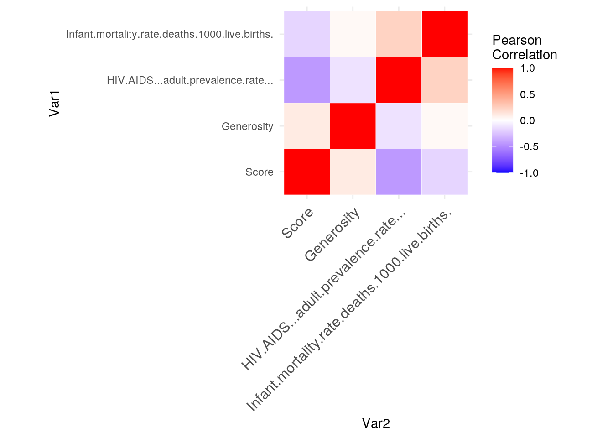
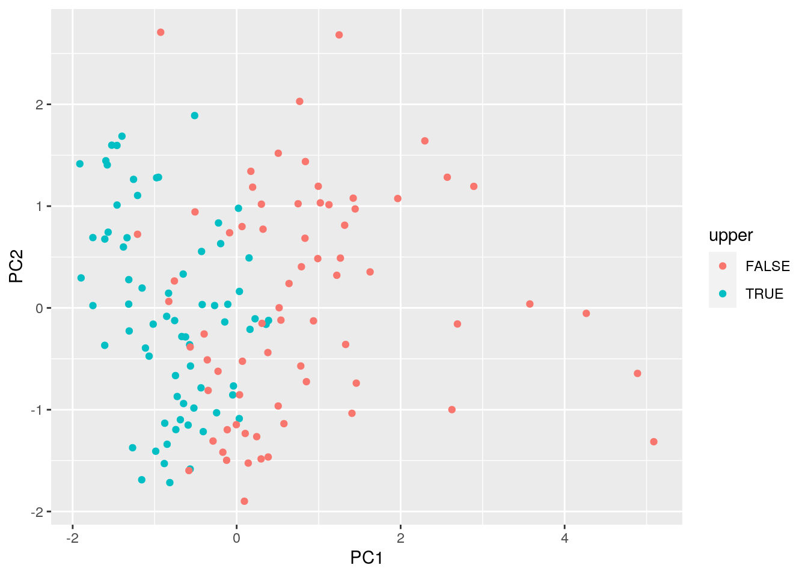

For this project I decided to look at some interesting datasets pertaining to countries. The happiness scores and rankings use data from the Gallup World Poll. The scores are from nationally representative samples for the year 2019 and use the Gallup weights to make the estimates representative. The columns following the happiness score estimate the extent to which each of six factors – economic production, social support, life expectancy, freedom, absence of corruption, and generosity – contribute to making life evaluations higher. The reports review the state of happiness in the world today and show how the new science of happiness explains personal and national variations in happiness. The next file that I used was a dataset containing a compilation of demographic information for all of the world’s countries. It includes variables such as GDP, birth rates, death rates, HIV rates, infant mortality rates, etc. Even though the data doesn’t include any specific variables relating to cultural, social or political aspects, some implicit information (such as a country’s level of development, general health standards and economic contribution) can be drawn.
More specifically the happiness data set contains variables that tell us information about the name of the country, the happiness score, the GDP per capita, the social support score, the healthy individual life expectancy, the freedom to make choices score, the generosity score, and the perception of corruption in the country score of which we kept the happiness score and the generosity score. There are 140 observations in this dataset. The second dataset has 45 variables of which we kept the HIV prevalence per 1000 people and the infant mortality number per 1000 live births. There are 156 observations in this dataset. I thought this data was interesting because I recently heard about the happiness metric in Bhutan and I thought it would be interesting to see if there was a correlation between "happier" countries and better health outcomes or higher generosity scores. I do expect there to be lower infant mortality rates and lower HIV rates in the "happier" countries but I do not expect there to be a difference in the generosity scores.
pivot_wider()/spread() and then tidy them again with pivot_longer/gather() to demonstrate your use of the functions. It's fine to wait until you have your descriptives to use these functions (e.g., you might want to pivot_wider() to rearrange the data to make your descriptive statistics easier to look at); it's fine long as you use them at least once!getwd()## [1] "/stor/home/ddg2229/website/content/project"data1 <- read.csv("nineteen.csv")
data2 <- read.csv("factbook.csv", sep = ";")
data1 <- data1[, -1]library(dplyr)
data <- inner_join(data1, data2, by = c(Country.or.region = "Country"))
data <- data %>% select(1, 2, 7, 20, 26)
data$Infant.mortality.rate.deaths.1000.live.births. <- as.numeric(data$Infant.mortality.rate.deaths.1000.live.births.)
data$HIV.AIDS...adult.prevalence.rate... <- as.numeric(levels(data$HIV.AIDS...adult.prevalence.rate...))[data$HIV.AIDS...adult.prevalence.rate...]
head(data)## Country.or.region Score Generosity HIV.AIDS...adult.prevalence.rate...
## 1 Finland 7.769 0.153 0.1
## 2 Denmark 7.600 0.252 0.2
## 3 Norway 7.554 0.271 0.1
## 4 Iceland 7.494 0.354 0.2
## 5 Netherlands 7.488 0.322 0.2
## 6 Switzerland 7.480 0.263 0.4
## Infant.mortality.rate.deaths.1000.live.births.
## 1 91
## 2 110
## 3 92
## 4 90
## 5 127
## 6 107data <- data %>% filter(!is.na(HIV.AIDS...adult.prevalence.rate...))
data %>% mutate(infantmoralityperc = Infant.mortality.rate.deaths.1000.live.births./1000 *
100) %>% mutate(upper = (Score > quantile(Score, 0.5)))## Country.or.region Score Generosity HIV.AIDS...adult.prevalence.rate...
## 1 Finland 7.769 0.153 0.1
## 2 Denmark 7.600 0.252 0.2
## 3 Norway 7.554 0.271 0.1
## 4 Iceland 7.494 0.354 0.2
## 5 Netherlands 7.488 0.322 0.2
## 6 Switzerland 7.480 0.263 0.4
## 7 Sweden 7.343 0.267 0.1
## 8 New Zealand 7.307 0.330 0.1
## 9 Canada 7.278 0.285 0.3
## 10 Austria 7.246 0.244 0.3
## 11 Australia 7.228 0.332 0.1
## 12 Costa Rica 7.167 0.144 0.6
## 13 Israel 7.139 0.261 0.1
## 14 Luxembourg 7.090 0.194 0.2
## Infant.mortality.rate.deaths.1000.live.births. infantmoralityperc upper
## 1 91 9.1 TRUE
## 2 110 11.0 TRUE
## 3 92 9.2 TRUE
## 4 90 9.0 TRUE
## 5 127 12.7 TRUE
## 6 107 10.7 TRUE
## 7 51 5.1 TRUE
## 8 137 13.7 TRUE
## 9 116 11.6 TRUE
## 10 111 11.1 TRUE
## 11 113 11.3 TRUE
## 12 211 21.1 TRUE
## 13 173 17.3 TRUE
## 14 117 11.7 TRUE
## [ reached 'max' / getOption("max.print") -- omitted 126 rows ]data %>% arrange(desc(HIV.AIDS...adult.prevalence.rate...))## Country.or.region Score Generosity
## 1 Swaziland 4.212 0.074
## 2 Botswana 3.488 0.025
## 3 Lesotho 3.802 0.107
## 4 Zimbabwe 3.663 0.151
## 5 South Africa 4.722 0.130
## 6 Namibia 4.639 0.070
## 7 Zambia 4.107 0.247
## 8 Malawi 3.410 0.218
## 9 Central African Republic 3.083 0.235
## 10 Mozambique 4.466 0.197
## 11 Tanzania 3.231 0.276
## 12 Gabon 4.799 0.043
## 13 Sierra Leone 4.374 0.252
## 14 Cameroon 5.044 0.187
## 15 Kenya 4.509 0.372
## 16 Burundi 3.775 0.176
## 17 Liberia 3.975 0.233
## 18 Haiti 3.597 0.419
## 19 Nigeria 5.265 0.215
## 20 Rwanda 3.334 0.217
## HIV.AIDS...adult.prevalence.rate...
## 1 38.8
## 2 37.3
## 3 28.9
## 4 24.6
## 5 21.5
## 6 21.3
## 7 16.5
## 8 14.2
## 9 13.5
## 10 12.2
## 11 8.8
## 12 8.1
## 13 7.0
## 14 6.9
## 15 6.7
## 16 6.0
## 17 5.9
## 18 5.6
## 19 5.4
## 20 5.1
## Infant.mortality.rate.deaths.1000.live.births.
## 1 171
## 2 147
## 3 204
## 4 168
## 5 161
## 6 126
## 7 208
## 8 5
## 9 214
## 10 23
## 11 221
## 12 145
## 13 31
## 14 170
## 15 159
## 16 172
## 17 19
## 18 190
## 19 222
## 20 215
## [ reached 'max' / getOption("max.print") -- omitted 120 rows ]data %>% filter(!is.na(HIV.AIDS...adult.prevalence.rate...)) %>%
mutate(infantmoralityperc = Infant.mortality.rate.deaths.1000.live.births./1000 *
100) %>% mutate(upper = (Score > quantile(Score, 0.5))) %>%
group_by(upper) %>% summarize(meaninfant = mean(infantmoralityperc),
sdinfant = sd(infantmoralityperc), mininfant = min(infantmoralityperc),
maxinfant = max(infantmoralityperc), meangen = mean(Generosity),
sdgen = sd(Generosity), mingen = min(Generosity), maxgen = max(Generosity),
meanHIV = mean(HIV.AIDS...adult.prevalence.rate...), sdHIV = sd(HIV.AIDS...adult.prevalence.rate...),
minHIV = min(HIV.AIDS...adult.prevalence.rate...), maxHIV = max(HIV.AIDS...adult.prevalence.rate...),
n = n())## # A tibble: 2 x 14
## upper meaninfant sdinfant mininfant maxinfant meangen sdgen mingen maxgen
## <lgl> <dbl> <dbl> <dbl> <dbl> <dbl> <dbl> <dbl> <dbl>
## 1 FALSE 12.5 6.91 0.4 22.2 0.182 0.0980 0 0.498
## 2 TRUE 10.5 5.39 0.8 21.1 0.182 0.0902 0.043 0.375
## # … with 5 more variables: meanHIV <dbl>, sdHIV <dbl>, minHIV <dbl>,
## # maxHIV <dbl>, n <int>numericdata <- data[, -1]
correlations <- cor(numericdata)
correlations## Score Generosity
## Score 1.0000000 0.10700954
## Generosity 0.1070095 1.00000000
## HIV.AIDS...adult.prevalence.rate... -0.4415704 -0.12366085
## Infant.mortality.rate.deaths.1000.live.births. -0.1798814 0.03401833
## HIV.AIDS...adult.prevalence.rate...
## Score -0.4415704
## Generosity -0.1236609
## HIV.AIDS...adult.prevalence.rate... 1.0000000
## Infant.mortality.rate.deaths.1000.live.births. 0.2310347
## Infant.mortality.rate.deaths.1000.live.births.
## Score -0.17988144
## Generosity 0.03401833
## HIV.AIDS...adult.prevalence.rate... 0.23103466
## Infant.mortality.rate.deaths.1000.live.births. 1.00000000The summary data tells us that for the countries below the median happiness score, the meaninfant, sdinfant, mininfant, maxinfant, meangen, sdgen, mingen, maxgen, meanHIV are 12.54714 6.908275 0.4 22.2 0.1822286 0.09800150 0.000 0.498 and 4.8761429 respectively.
The summary data tells us that for the countries above the median happiness score, the meaninfant, sdinfant, mininfant, maxinfant, meangen, sdgen, mingen, maxgen, meanHIV are 10.46857 5.391339 0.8 21.1 0.1824571 0.09023796 0.043 0.375 and 0.3685714 respectively.
library(reshape2)
melted <- melt(correlations)
head(melted)## Var1 Var2 value
## 1 Score Score 1.0000000
## 2 Generosity Score 0.1070095
## 3 HIV.AIDS...adult.prevalence.rate... Score -0.4415704
## 4 Infant.mortality.rate.deaths.1000.live.births. Score -0.1798814
## 5 Score Generosity 0.1070095
## 6 Generosity Generosity 1.0000000library(ggplot2)
ggplot(data = melted, aes(x = Var1, y = Var2, fill = value)) +
geom_tile()# Heatmap
library(ggplot2)
ggplot(data = melted, aes(Var2, Var1, fill = value)) + geom_tile(color = "white") +
scale_fill_gradient2(low = "blue", high = "red", mid = "white",
midpoint = 0, limit = c(-1, 1), space = "Lab", name = "Pearson\nCorrelation") +
theme_minimal() + theme(axis.text.x = element_text(angle = 45,
vjust = 1, size = 12, hjust = 1)) + coord_fixed()
data <- data %>% mutate(infantmoralityperc = Infant.mortality.rate.deaths.1000.live.births./1000 *
100) %>% mutate(upper = (Score > quantile(Score, 0.5)))
p2 <- ggplot(data, aes(x = infantmoralityperc, y = Generosity,
color = upper)) + geom_point() + geom_smooth(method = lm,
aes(fill = upper))
p2 + labs(title = "Scatterplot of Generosity and Infant Mortality grouped by upper/lower happiness",
x = "Infant Mortality Per 1000")data2 <- data %>% filter(!is.na(HIV.AIDS...adult.prevalence.rate...)) %>%
mutate(HIVupper = (HIV.AIDS...adult.prevalence.rate... >
quantile(HIV.AIDS...adult.prevalence.rate..., 0.5)))
p1 <- ggplot(data2, aes(x = HIVupper, y = infantmoralityperc)) +
geom_boxplot()
p1 + stat_summary(fun.y = "mean", geom = "point", size = 5, color = "purple",
shape = 15) + geom_point(aes(color = upper, width = 0.05)) +
labs(title = "Boxplot of Infant Mortality Per 1000 grouped by upper/lower HIV Prevalence",
x = "Above 50th Percentile for HIV Prevalence", y = "Infant Mortality Per 1000",
colour = "Above 50th Percentile Happiness Score")The first graph shows a Scatterplot of Generosity and Infant Mortality grouped by upper/lower happiness. We can see that there is almost full overlap between the two groups. There are no clear patterns and the generosity score seems to be consistent/randomly varied regardless of happiness score or infant mortality.
The second graph shows a Boxplot of Infant Mortality Per 1000 grouped by upper/lower HIV Prevalence. We can see that there is a lot of overlap between the two groups. There is more variation in the countries that have HIV prevalence above the median. The mean is plotted in purple square and each individual data point is plotted according to their happiness score relative quantile as well. There do seem to be more countries below the median happiness score in the above the median HIV prevalence box but it is not as distinct as one might have thought.
clust_dat <- data %>% dplyr::select(Score, Generosity, HIV.AIDS...adult.prevalence.rate...,
Infant.mortality.rate.deaths.1000.live.births.)
library(cluster)
sil_width <- vector() #empty vector to hold mean sil width
for (i in 2:10) {
kms <- kmeans(clust_dat, centers = i) #compute k-means solution
sil <- silhouette(kms$cluster, dist(clust_dat)) #get sil widths
sil_width[i] <- mean(sil[, 3]) #take averages (higher is better)
}
ggplot() + geom_line(aes(x = 1:10, y = sil_width)) + scale_x_continuous(name = "k",
breaks = 1:10)pam1 <- clust_dat %>% pam(k = 2)
pam1## Medoids:
## ID Score Generosity HIV.AIDS...adult.prevalence.rate...
## [1,] 66 5.525 0.133 0.3
## [2,] 51 5.893 0.103 1.1
## Infant.mortality.rate.deaths.1000.live.births.
## [1,] 74
## [2,] 183
## Clustering vector:
## [1] 1 1 1 1 1 1 1 2 1 1 1 2 2 1 2 2 1 1 2 1 1 1 1 1 2 1 1 1 1 1 1 1 1 1 2 1 2
## [38] 2 2 2 1 1 1 1 1 2 1 2 1 2 2 1 1 1 1 1 2 2 1 1 1 2 1 1 1 1 1 2 1 1 1 1 1 1
## [75] 2 2 2 1 2 1 1 2 1 1 1 1 1 2 1 2 2 1 2 2 2 2 1 2 2 1
## [ reached getOption("max.print") -- omitted 40 entries ]
## Objective function:
## build swap
## 34.10786 28.65689
##
## Available components:
## [1] "medoids" "id.med" "clustering" "objective" "isolation"
## [6] "clusinfo" "silinfo" "diss" "call" "data"library(GGally)
data %>% mutate(cluster = as.factor(pam1$clustering)) %>% ggpairs(columns = c("Score",
"Generosity", "HIV.AIDS...adult.prevalence.rate...", "Infant.mortality.rate.deaths.1000.live.births."),
aes(color = cluster))plot(pam1, which = 2)plot(pam1, which = 1)eig1 <- data %>% dplyr::select(Score, Generosity, HIV.AIDS...adult.prevalence.rate...,
Infant.mortality.rate.deaths.1000.live.births.) %>% cor() %>%
eigen()
eig1## eigen() decomposition
## $values
## [1] 1.6145816 1.0301858 0.8016205 0.5536122
##
## $vectors
## [,1] [,2] [,3] [,4]
## [1,] -0.6158330 0.04629828 0.4163585 0.66727191
## [2,] -0.2131789 0.84216681 -0.4925346 0.05214889
## [3,] 0.6389867 -0.01780358 -0.2292895 0.73403361
## [4,] 0.4086569 0.53693070 0.7290278 -0.11499283eig1$vectors## [,1] [,2] [,3] [,4]
## [1,] -0.6158330 0.04629828 0.4163585 0.66727191
## [2,] -0.2131789 0.84216681 -0.4925346 0.05214889
## [3,] 0.6389867 -0.01780358 -0.2292895 0.73403361
## [4,] 0.4086569 0.53693070 0.7290278 -0.11499283eig1$values## [1] 1.6145816 1.0301858 0.8016205 0.5536122matA <- matrix(data %>% dplyr::select(Score, Generosity, HIV.AIDS...adult.prevalence.rate...,
Infant.mortality.rate.deaths.1000.live.births.) %>% scale(),
nrow = 140)
matA## [,1] [,2] [,3] [,4]
## [1,] 2.056873618 -0.31262248 -0.394042058 -0.38454625
## [2,] 1.907694133 0.74213593 -0.378420081 -0.08110720
## [3,] 1.867089066 0.94456431 -0.394042058 -0.36857577
## [4,] 1.814125936 1.82885671 -0.378420081 -0.40051672
## [5,] 1.808829623 1.48792470 -0.378420081 0.19039089
## [6,] 1.801767872 0.85933131 -0.347176127 -0.12901863
## [7,] 1.680835390 0.90194781 -0.394042058 -1.02336529
## [8,] 1.649057512 1.57315771 -0.394042058 0.35009565
## [9,] 1.623458666 1.09372207 -0.362798104 0.01471565
## [10,] 1.595211663 0.65690293 -0.362798104 -0.06513673
## [11,] 1.579322723 1.59446596 -0.394042058 -0.03319578
## [12,] 1.525476874 -0.40850961 -0.315932172 1.53191087
## [13,] 1.500760746 0.83802306 -0.394042058 0.92503279
## [14,] 1.457507523 0.12419666 -0.378420081 0.03068613
## [15,] 1.425729645 1.76493196 -0.378420081 0.23830232
## [16,] 1.396599923 1.23222570 -0.394042058 0.28621375
## [17,] 1.364822045 0.83802306 -0.394042058 -0.16095958
## [18,] 1.310093476 -0.23804360 -0.378420081 -0.04916625
## [19,] 1.282729192 1.04045144 -0.315932172 0.63756422
## [20,] 1.247420438 -1.45261389 -0.394042058 -0.33663482
## [21,] 1.223587030 0.84867718 -0.381544476 -1.40665671
## [22,] 1.136197864 2.05259335 -0.378420081 -0.35260530
## [23,] 1.020561696 -1.15429838 -0.362798104 -0.91157196
## [24,] 1.017913539 -0.76009574 -0.347176127 -0.14498911
## [25,] 0.887271150 0.04961778 -0.362798104 1.38817659
## [ reached getOption("max.print") -- omitted 115 rows ]matB <- matrix(eig1$vectors, nrow = 4)
PCAscores <- matA %*% matB
plot(PCAscores)data %>% mutate(PC1 = PCAscores[, 1], PC2 = PCAscores[, 2]) %>%
ggplot(aes(PC1, PC2, color = upper)) + geom_point()
- Include all steps as we discuss in class, including a visualization.
- If you don't have at least 3 numeric variables, or you want to cluster based on categorical variables too, convert them to factors in R, generate Gower's dissimilarity matrix on the data, and do PAM clustering on the dissimilarities.
- Show how you chose the final number of clusters/principal components
- Interpret the final clusters/principal components
- For every step, document what your code does (in words) and what you see in the data!
Prerequisite: Finding appropriate data from at least two sources per the instructions above: Failure to do this will result in a 0! You will submit a .Rmd file and a knitted document (pdf).
tidyr functions pivot_longer/gather and/or pivot_wider/spread)dplyr join functiondplyr functions in the service of generating summary statistics (18 pts)
cor() on your numeric variablesCreate a correlation heatmap of your numeric variables
Create two effective, polished plots with ggplot
Either k-means/PAM clustering or PCA (inclusive "or") should be performed on at least three numeric variables in your dataset
...